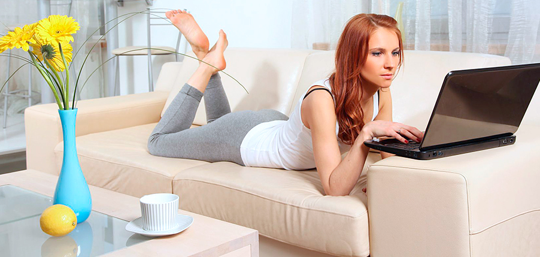

Работа в видеочате: дома или в студии?
Техническая простота и удобство - большие преимущества видеочата. Нет ничего сложного в работе с веб-камерой, подключенной к компьютеру. И эта кажущаяся доступность вызывает у многих начинающих моделей вопрос: зачем работать в студии, если можно общаться в видеочате из дома? Кроме того, девушкам может казаться, что самостоятельно они заработают больше - ведь не придется отдавать комиссию студии… Причина этих сомнений понятна, но для принятия решения нужна более подробная и объективная информация.
За 10+ лет работы на рынке вебкам-индустрии мы получили более чем исчерпывающие факты для ответа на эти вопросы. И пришли к выводу, что работа в студии гораздо выгоднее, удобнее и безопаснее, чем самостоятельные попытки покорить webcam-бизнес. Но, чтобы не быть голословными, мы готовы подробно и аргументированно объяснить разницу между общением в видеочате: дома и в студии ZORI.
Начнем с “домашней работы”. С одной стороны кажется, что это удобно (все под рукой) и дешево (не нужно даже ехать куда-то). Но учтите, что дома:
- бытовая веб-камера не обеспечит качественного изображения. Нужно оборудование достаточного уровня: видеокамера HD с пультом дистанционного управления или очень хорошая модель веб-камеры. Нельзя допустить, чтобы подвело соединение с интернетом - уверены ли вы в провайдере домашнего интернета?
- в домашней обстановке много отвлекающих факторов. Домочадцы, соседи, телефонные звонки. Нет строгого графика работы, стимулирующего соблюдать дисциплину. Проще говоря, дома зачастую лень работать, и это сразу же сказывается на заработке.
- при отсутствии опыта работы в вебкам-моделинге непонятно, что и как нужно делать. В нужный момент никто не подскажет и не исправит ошибки, не займется настройками техники. На каких сайтах работать, как правильно выглядеть и вести себя - в домашних условиях никто не ответит на эти вопросы.
Проще говоря, рабочее место и дом - это совершенно разные пространства, и они не должны смешиваться, если вы хотите развиваться в профессии, достичь настоящего успеха и высокого заработка. Кстати, о финансах. Среди неопытных моделей ходят слухи, мол, если работать дома и не отдавать 50% комиссии агентству, то вам достанется 100% заработка. В этой самостоятельной арифметике есть большой изъян: общая сумма дохода при работе из дома и из студии отличается в разы. Например, ваши 100% дома составят около $200, а 50% в нашей студии - это минимум $1000.
Именно с такой точки зрения - с учетом реальной выгоды, безопасности и гарантий - нужно смотреть на работу в видеочате из студии. И наш опыт позволяет утверждать это с полной уверенностью. А условия работы в студии ZORI только подтверждают эту позицию:
- Профессиональная команда, которая знает без преувеличения все о вебкам-индустрии и умеет быстро, красиво и эффективно превратить неопытную девушку в успешную webcam-модель. И мы сделаем все для этого: наймем стилиста, фотографа, тренера, психолога, обеспечим курсы английского, программу диетологии, профессиональное оборудование, предоставим системного администратора. Подберем для вашей работы именно те сайты, которые позволят как можно быстрее хорошо заработать и почувствовать себя на высоте.
- Дружный, по-настоящему классный и “уютный” коллектив, в котором вы будете чувствовать себя комфортно, уверенно и спокойно. Команда ZORI Studio - это молодая, веселая и при этом серьезная и ответственная среда. Мы обладаем опытом и куражом, чтобы сделать вашу работу максимально качественной и прибыльной. Составим удобный график работы, обеспечим лучшим компьютером и камерой.
- Высокий статус наших моделей - один из приоритетов студии. Благодаря нашим связям, репутации и долгосрочному сотрудничеству с лучшими мировыми webcam-сайтами, вы займете самые высокие позиции и всегда будете топ-моделью.
- Обучение - важный этап нашей работы, и оно никогда не заканчивается. В студии регулярно проводятся полезные курсы по психологии, иностранному языку, личностному росту. Сотрудники студии участвуют во внутренних и международных семинарах. Модели получают круглосуточную поддержку семь дней в неделю в любое время. Мы делаем все для создания идеальных условий, вам останется только работать и зарабатывать.
Поэтому наш выбор и искренний совет вам - это организованная и налаженная работа в студии и стабильный, гарантированный и высокий доход, который она обеспечивает. И если ваша цель - купить машину и/или дом, заработать капитал для собственного бизнеса, переехать в Европу, и все это в течение ближайших 2-4 лет - то нам с вами точно по пути. Вместе мы воплотим эти планы и сделаем мечты реальностью.
Список статей